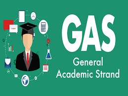
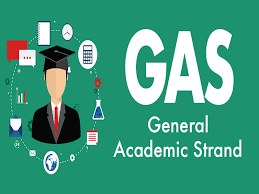

GAS
GAS stands for General Academic Strand. Through the GAS, senior high school students are given exposure to different courses so they can make a more informed decision about their future career.
GAS stands for General Academic Strand. Through the GAS, senior high school students are given exposure to different courses so they can make a more informed decision about their future career.
